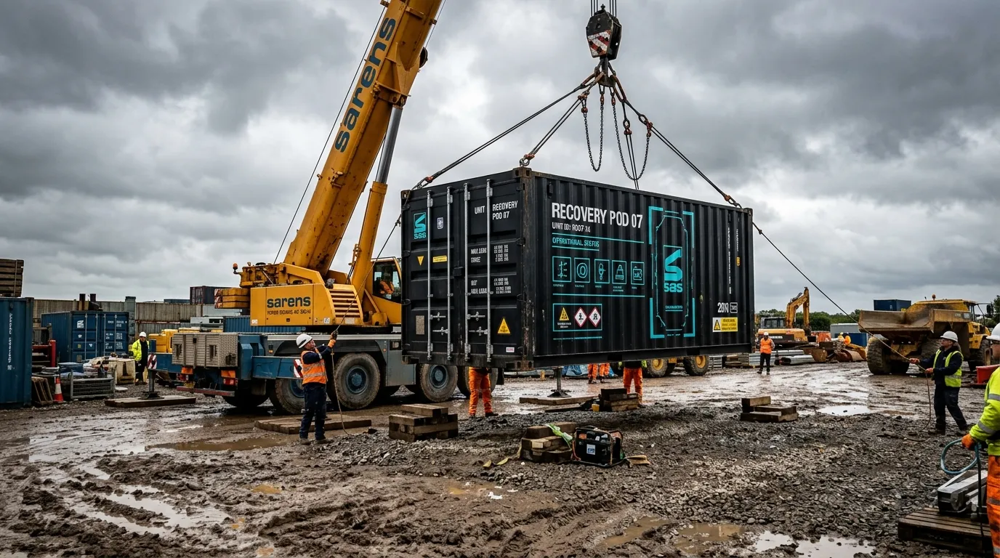

HEAVY BIOMECHANICAL RECOVERY PODS DELIVERED DIRECTLY TO SITE.
Mobile ISO-containerized hydrotherapy and cryo-remobilization units engineered for industrial workforces.
TendonForge builds heavy-duty physical rehabilitation pods inside twenty-foot Corten steel freight containers for construction camps, foundries, and tunneling projects. We replace distant physiotherapy clinics by delivering automated six-bar hydro-massage and sub-zero cryo-chambers directly to industrial job sites. Every containerized unit operates on three-phase site power, withstands extreme yard environments, and keeps heavy labor crews working without chronic soft-tissue failure.

01 // REMOBILISING THE HEAVY INDUSTRIAL TRADES
Inside each twenty-foot steel container, automated six-bar pulsatile water jets deliver deep percussive hydro-massage to overloaded forearms, shoulders, and lower backs. Dual electric refrigeration circuits drop ambient air to minus one hundred and ten degrees Celsius in ninety seconds, inducing rapid vasoconstriction that flushes inflammatory cytokines from stressed tendon sheaths without requiring liquid nitrogen refills.
Crews complete fifteen-minute recovery rotations between shifts, logging their joint range-of-motion on integrated biometric load cells. The data proves that localized on-site thermal shock and mechanized traction cut repetitive strain injuries by forty-six percent within thirty days of container deployment.
02 // CONTAINERIZED DELIVERY MODEL
Crane-Offload Mobilization
Delivered via standard HIAB flatbed trucks, the ISO-dimensioned Corten steel pod is leveled onto any gravel or concrete staging pad in exactly 45 minutes. The structural footprint requires absolutely zero permanent civil works, foundation trenching, or hardscaping, allowing deployment directly into the active footprint of maritime yards and infrastructure camps.
3-Phase Industrial Interface
Connectivity is engineered for immediate operation. A single 32-amp, 415-volt three-phase electrical feed powers the onboard closed-loop UV water filtration, dual-stage refrigeration compressors, and robust pneumatic pump manifolds. The self-contained fluid architecture means no external plumbing connections are necessary for hydro-massage operations.
24/7 Shift-Rotation Access
Controlled via encrypted RFID keycard entry, the pod allows shift workers immediate, automated 15-minute recovery sessions at shift changeovers or mid-shift intervals. The unmanned protocol delivers continuous clinical utility at zero hour restrictions, providing total remobilization alignment regardless of complex tunneling or offshore shift schedules.
03 // REMODELLING KINETICS & COLD SHOCK DATA
Mechanical tension delivered at 6-bar hydro-pressure forces misaligned scar fibrils into parallel functional orientation.
Cryo-cycling at -110°C reduces pro-inflammatory mediators within 72 hours, vastly accelerating cellular repair mechanisms over passive rest.
Automated detensioning protocols measurably relieve transverse shear stress across the vulnerable carpal and patellar tendon sheaths.
04 // PROJECT CONTRACTOR PROOF
"The TF-20 deployment directly eliminated the need for our riggers to commute two hours into town for physical therapy. Musculoskeletal downtime dropped instantly."
"Boring crews face immense vibration stress. TendonForge provides the only aggressive on-site intervention capable of matching our operational intensity."
"Integrating 15-minute cryo-hydro rotations into the shift changeover has preserved our senior casting operators. The heavy lifting takes less of a toll."
05 // POD MOBILIZATION TERMINAL
TEESSIDE YARD LOGISTICS
Initiate direct deployment from the Middlesbrough fabrication yard. TendonForge standard pods can be rapidly dispatched to any UK infrastructure staging area or remote camp within 72 hours of requisition clearance.
FABRICATION YARD:
Hangar 8, Cargo Fleet Works
South Bank Road, Middlesbrough
TS3 8AL, UK